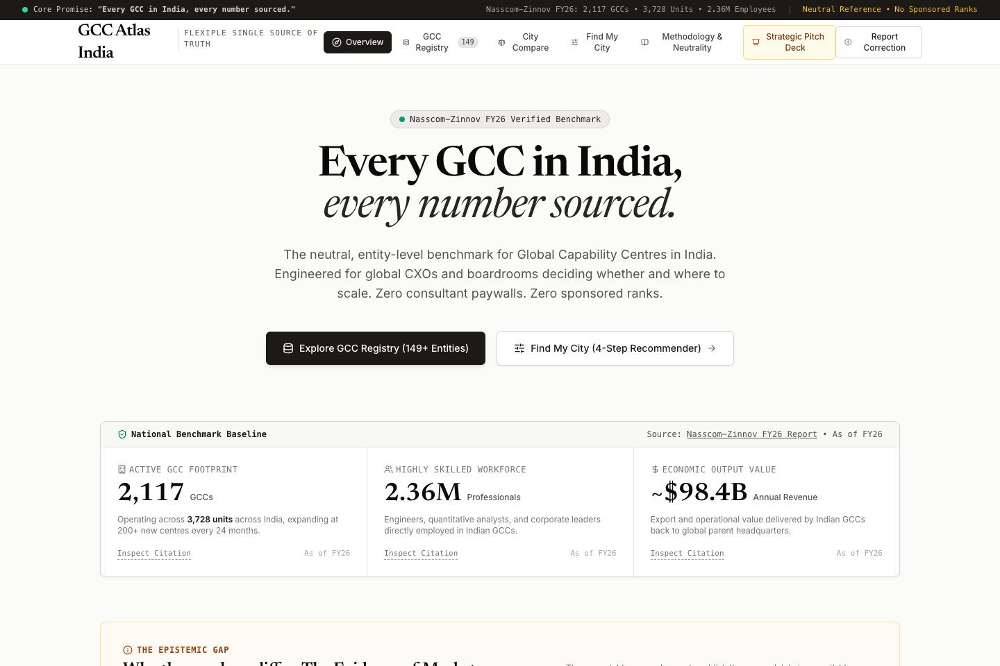
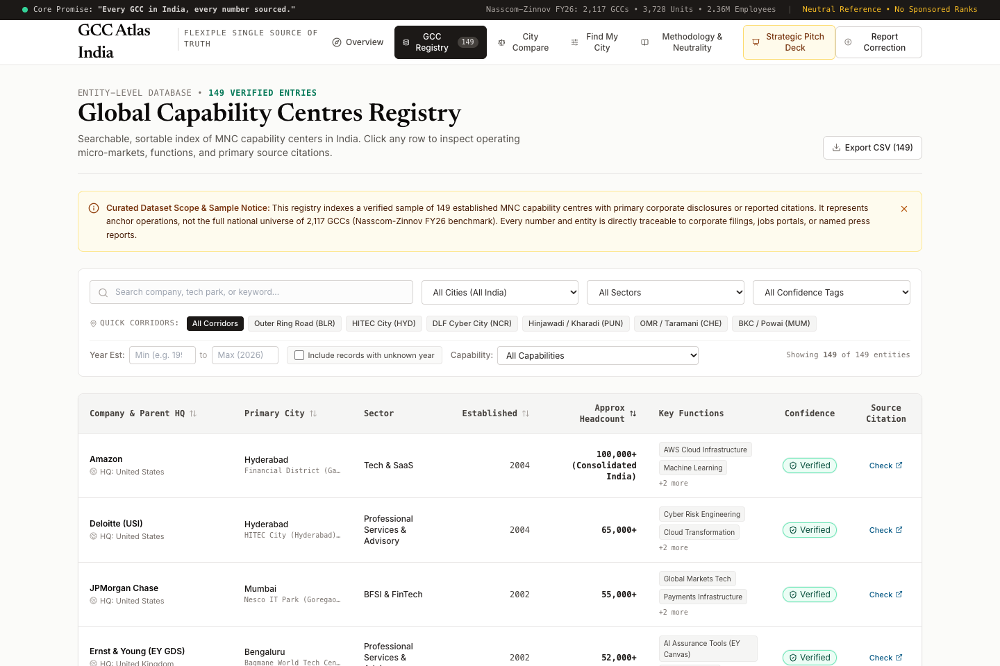
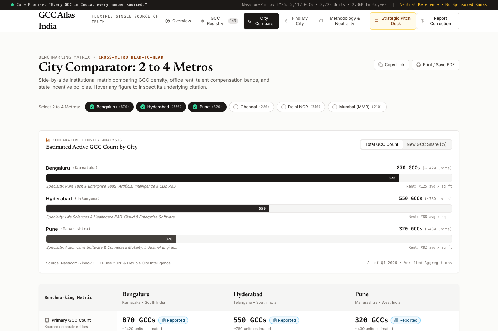
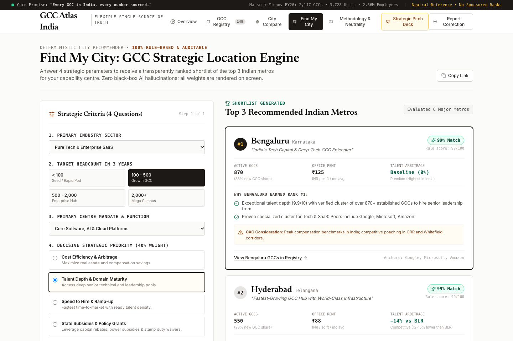
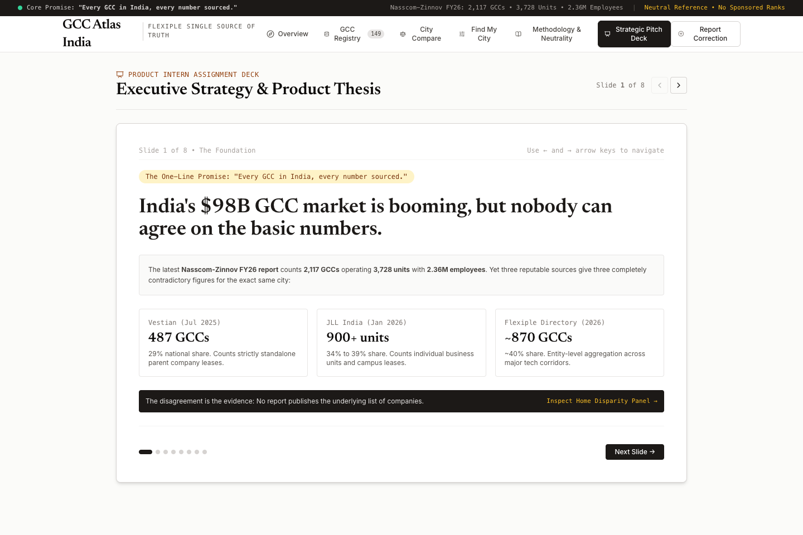

A neutral, sourced reference and decision guide for India’s Global Capability Centres.
Global entrants deal with a fragmented web: commercial landlords, legal advisors, tax auditors, BOT operators, recruiters, EOR platforms, and state IT promotion agencies.
The Epistemic Disparity: Reports publish conflicting counts for the exact same city without underlying entity data. In Bengaluru, Vestian reports 487 GCCs (standalone parent leases), JLL reports 900+ units (physical business branches), while Flexiple lists ~870 entities.

Why: Trust is the prerequisite. Without a verifiable list of actual companies, statutory citations, and honest confidence badges, no executive will trust a recommendation algorithm.
Why: Captures uncorrupted entrant commercial intent (sector, team size, priority). CXOs get transparent scoring; future marketplace partners get qualified demand signals.
Why: Delivers immediate board-level clarity on commercial rents, talent compensation arbitrage, and state policy gazettes in seconds.
Every single row has a company name, city, function, headcount, confidence badge, and a publicly verifiable source link.
Where data is not publicly stated by the MNC (e.g., Stripe India headcount & establishment year), fields are strictly kept null and displayed as "Not available yet".
Side-by-side benchmarking across Bengaluru, Hyderabad, Pune, Chennai, Delhi NCR, and Mumbai:


Generates a ranked Top 3 shortlist with plain-language rank justifications, real peer GCC anchors, and honest CXO caveats (e.g., ORR traffic density, BKC rent premiums).

The Neutrality Rule: Nobody can pay to change a score, alter a city ranking, or delete an honest caveat.
Entrant-Free Model: Global companies access 100% of data and tools without paywalls. Future monetization comes purely from vetted B2B service provider introduction fees.
